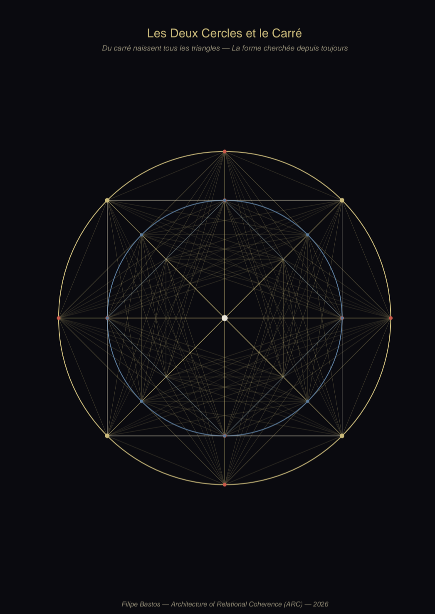
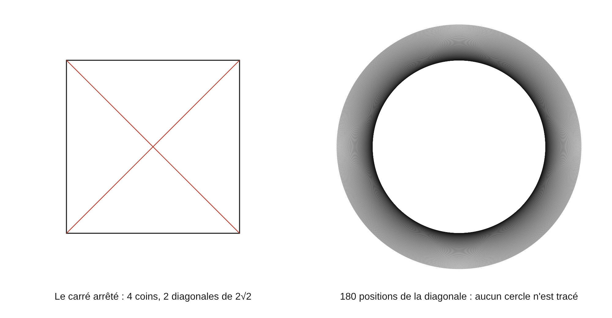
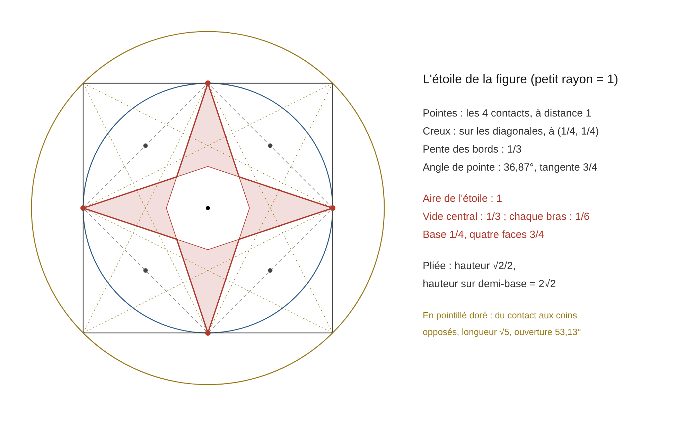

Bibliothèque des documents / Dossier
La Figure fondamentale
Version texte du dossier, pour la lecture en ligne, la recherche et les moteurs de réponse. Le PDF fait foi pour la mise en page et les formules : télécharger le PDF. Le script de vérification est à côté : figure_fondamentale_verif.py.
Deux cercles et un carré : tout ce qu'elle rend, sans réglage
Avis. Ce document prolonge La Figure Fondamentale v1.0 du 10 mai 2026 (« les deux cercles, le carré, le pentagramme et tout ce qui en sort »). Il rassemble en un seul lieu ce que le corpus tire de sa figure, tel que les volumes et le Registre l'ont établi, corrigé ou borné depuis, et y ajoute ce que l'auteur y a vu le 14 novembre 2026 : la figure qui tourne, et une étoile à quatre branches que ses propres lignes dessinent. La figure ne contient aucun nombre choisi. Tout ce qui est marqué Th ci-dessous en sort par le calcul, en fractions exactes, et se refait au crayon. Ce que le corpus a retiré ou borné est rappelé à la section 8 et n'est pas réaffirmé ici.
Statuts : F, fait connu ou mesuré par d'autres ; Th, calcul exact ou démonstration, refait au script figure_fondamentale_verif.py ; L, lecture de l'auteur, citée et datée. Unité : le petit rayon vaut 1, le grand vaut √2 ; les valeurs en R sont données quand le corpus les écrit ainsi.
1. La figure
1.1 (F). Un carré, son cercle inscrit, son cercle circonscrit. Les trois pièces sont dans Euclide (Éléments, IV). Personne ne les avait lues comme une seule figure.
1.2 (Th). Le carré touche le grand cercle en ses quatre coins et le petit en les quatre milieux de ses côtés : huit points, un tous les 45°. Le rapport des rayons est √2/2, le rapport des aires est 1/2. La diagonale du carré est le diamètre du grand cercle ; son côté est le diamètre du petit (Volume 2, É 1.3, É 1.9).
1.3 (L). « C'est √2 qui m'y a amené. Il était impossible que la mesure de la réalité puisse être une mauvaise proportion. Donc j'ai creusé √2 jusqu'à y dessiner deux cercles et un carré. » (l'auteur, 14 novembre 2026). La démonstration d'Euclide n'est pas contestée : √2 n'est pas un rapport de deux entiers. Ce qui change est la lecture : il est la relation exacte entre deux cercles tenus par le même carré.
1.4 (L, définition). « Géométrie égale forme. Une forme se définit par ses relations fermées. » « Avant les décimales de Stevin, tout était géométrie pour une raison tautologique : les formes étaient de vraies formes. » (l'auteur, 14 novembre 2026). Là où les relations ferment, il y a une forme, et elle se compte.

2. Ce que le corpus en a déjà tiré
2.1 (Th, les nombres). √2 et 1/2 (Volume 2, É 1.3). Le rapport r/R = cos(π/n) pour chaque polygone : 1/2 pour le triangle, √2/2 pour le carré, Φ/2 pour le pentagone, √3/2 pour l'hexagone (Volume 2, É 2.15 ; Volume 7, É 6.14 ; Fourier est un ARC, É 2.2). La borne 2√2 = 4 × 1/2 × √2 et son rapport à 4, égal à r/R (Volume 2, É 4.20 ; Volume 7, É 1.13, É 1.42).
2.2 (Th, les positions). Les quatre paires d'inversion, d'écarts 7, 5, 3, 1, de somme 16, autour du centre vide 4,5, centre des positions 1 à 8 (Volume 2, É 3.9, É 3.10). Le réseau complet des huit points : 28 arêtes ; 36 avec le centre ; quatre arêtes sont leur propre miroir (Volume 8, chapitre 7, 7.7).
2.3 (Th, le centre vide). Quand chaque point se relie à tous les autres, aucune ligne ne traverse un octogone central, hors des axes et des diagonales. Au premier tracé, ses sommets sont à R − r du centre. Avec les quatre nœuds intérieurs, ils sont à R/4 sur les diagonales et à R√2/6 sur les axes, ses côtés à R√5/10 du centre, et son aire vaut R²/6 (Volume 2, É 1.12 bis, É 1.12 ter). « Le centre octogonal est vide. Je n'ai rien tracé, j'ai laissé les points se tracer seuls. » (l'auteur, 28 octobre 2026).
2.4 (Th, la cascade). Le cercle inscrit de chaque étage est le circonscrit du suivant ; chaque carré est tourné de 45° ; le tour est bouclé en huit niveaux ; la somme des aires vaut 2 (Volume 8, chapitre 7, 7.9). L'anneau entre les deux cercles a l'aire du disque intérieur (Volume 5, [13.6] ; Volume 8, 10.39 ; Poincaré est la matriochka, T.2).
2.5 (Th, F, L, la pyramide). La figure est le patron d'une pyramide à base carrée. Avec des faces de hauteur Φ/2 fois le côté, la pente vaut √Φ = 1,272020 ; Khéops mesurée donne 1,272569 et son seked 14/11 = 1,272727 (Volume 2, É 5.42 à É 5.44 ; Volume 8, 7.11 à 7.14).
2.6 (L, les rôles). La figure est l'atome déplié : le circonscrit est la limite, le carré la forme dense (Volume 8, 7.4). Les deux cercles sont le porteur et le monde ; les quatre coins sont l'air, la nourriture, le mouvement et le repos (Volume 10, É 2.7, É 29.7).
2.7 (Th, L, les mesures). Le corpus porte depuis mars 2026 que chaque polygone, du triangle au nonagone, lit une mesure dans la relation de ses deux cercles (The Geometric Origin of Physical Units v1.6 ; La Figure Fondamentale v1.0, §2.1 et §4.4 ; Registre R.35). Les relations sont exactes : pour le triangle r/R = 1/2, seul polygone de 3 à 9 dans ce cas, et six triangles ferment le tour, 6 × 60 = 360 ; pour le carré r²/R² = 1/2 et 4 × 90 = 360 ; pour le pentagone r/R = Φ/2 ; pour l'hexagone le côté égale R, seul polygone dans ce cas. La lecture de l'auteur y attache la seconde et le degré au triangle, l'angle droit et le radian au carré, le mètre à l'hexagone : « Les civilisations ont mesuré juste sans savoir ce qu'elles mesuraient. » Le statut est celui que le corpus s'est donné : les relations sont des théorèmes, l'attribution des unités est une Proposition et une Lecture, et la chaîne de l'hexagone au mètre est une cohérence de structure, « not a causal derivation in the mechanical sense » (Geometric Origin, Remark 9.1 ; Registre G.9, G.10).
3. La figure qui tourne
3.1 (L). « Le cercle rotationne constamment. » « Les trois formes, on ne les voit jamais, elles se dessinent. » « La seule façon de les figer, c'est par un dessin. » (l'auteur, 14 novembre 2026).
3.2 (Th). Quand le carré tourne autour de son centre, ses quatre coins décrivent le grand cercle et les milieux de ses côtés décrivent le petit. Les deux cercles sont la trace du carré. Ce qui reste visible est un disque toujours couvert et un anneau balayé, d'aires égales.
3.3 (Th, les comptes du tour). Pour un pas d'un degré : la silhouette du carré revient au quart de tour, 90 positions ; sa diagonale, de longueur 2√2, revient au demi-tour, 180 positions ; un coin marqué revient au tour, 360 positions. « 2√2 par carré, il tourne sur 360 ; c'est 1/2, c'est 180 carrés. » (l'auteur, 14 novembre 2026). Au bout d'un demi-tour la diagonale est revenue sur sa ligne, ses deux bouts échangés.
3.4 (L, les trois rôles). « L'observateur, c'est le petit cercle ; l'étendue, le monde, la limite, c'est le gros ; notre terrain de jeu, c'est l'échiquier, le carré au centre. » (l'auteur, 14 novembre 2026). Le petit cercle a la moitié de l'aire du grand.
3.5 (L, la forme et l'ouverture). « Ils ont confondu l'ouverture de la spirale avec une forme ouverte. On étudie les formes au papier et au crayon, et pour le mouvement et la relation on y ajoute la constante d'ouverture, π. » « π et 1/2 couchent toujours ensemble. » (l'auteur, 14 novembre 2026). Le Registre le portait déjà : 22/7 est l'adresse du cercle fermé, π est le cercle lié (R.153).

3.6 (F, Th, L, la croix). Quand ces lignes sont affichées sur un écran, une croix à quatre branches apparaît au centre. Elle ne vient pas des lignes, qui sont réparties également : elle reste droite quand on les décale toutes. Elle vient de la grille carrée des pixels rencontrant des lignes qui tournent. Le phénomène est le moiré, décrit par Rayleigh en 1874 ; la mire à rayons de Siemens, des années 1930, le montre à son centre sur tout capteur. « C'est une réalité sur une réalité. » (l'auteur, 14 novembre 2026) : le cadre fixe se révèle sous la rotation, là où tout se croise.
4. L'étoile
4.1 (L). « On la voit, la croix, mais enrobée en étoile à quatre brins. » « Les quatre coins. » (l'auteur, 14 novembre 2026), devant sa figure du 28 octobre.
4.2 (Th, ce qu'elle est). De chacun des quatre contacts partent deux droites vers les deux nœuds intérieurs opposés. Ces huit droites sont dans le tracé de l'auteur ; elles bordent le centre vide de É 1.12 ter. Prolongées jusqu'aux contacts, elles ferment une étoile : quatre pointes aux contacts, quatre creux sur les diagonales, au quart du chemin vers les coins du grand carré. La pente de ses bords est 1/3.
4.3 (Th, les aires). Grand carré 4 ; carré intérieur 2 ; étoile 1. Chaque étage est la moitié du précédent, et la descente s'arrête sur l'étoile, qui vaut l'unité. Son vide central vaut 1/3, chacun de ses bras 1/6.
4.4 (Th, l'angle). Chaque pointe s'ouvre d'un angle de tangente 3/4 : l'angle aigu du triangle 3, 4, 5. Le premier rotor du corpus, 3² + 4² = 5², est dans chaque branche.

4.5 (Th, la pyramide de l'étoile). L'étoile est un patron : une base carrée d'aire 1/4, dont les coins sont les quatre creux, et quatre faces d'aire totale 3/4. Chaque face a pour hauteur 3/4 sur une demi-base de 1/4. Pliée, elle donne une pyramide de hauteur √2/2, le rapport des deux cercles. Sa hauteur divisée par sa demi-base vaut 2√2, et le périmètre de sa base divisé par sa hauteur aussi. Le cosinus de sa pente est 1/3. Aucune longueur n'est choisie.
4.6 (Th, les deux patrons). La figure porte donc deux pyramides : celle des triangles d'or, de pente √Φ, dont le périmètre sur la hauteur vaut 44/7 par le seked ; celle de l'étoile, de pente 2√2. L'une inscrit le tour, l'autre la diagonale.
4.7 (L, Th, l'hélice). « Plus je la regarde, plus c'est une hélice. » « Les deux faces. » (l'auteur, 14 novembre 2026). L'étoile a un moyeu, le vide central, et quatre pales. Quand elle tourne, ses pointes décrivent le petit cercle : elle balaie le disque de l'observateur, et son aire rapportée à ce disque vaut 1/π. De face, on voit le tour ; de côté, si les pales sont inclinées, on voit l'avance : la pale qui tourne et la spirale qui monte sont deux faces du même objet. La figure donne l'inclinaison des pales, par le pli de 4.5 ; elle ne donne pas le pas de l'hélice, qui reste ouvert.
4.8 (L, Th, le demi et le tiers). « Le demi est toujours relié au 3 : le demi coupé au centre, un point au centre, un point à gauche et un point à droite. » (l'auteur, 14 novembre 2026). L'étoile se partage en trois tiers égaux : le centre, les deux pales de l'axe horizontal, les deux pales de l'axe vertical. Sur chaque axe, le centre coupe la paire de pales en deux moitiés : chaque pale vaut 1/6, qui est 1/2 fois 1/3 et aussi 1/2 moins 1/3, comme pour tout couple de fractions voisines ; 1/2 et 1/3 en est le premier. En nombres, c'est le pavé tordu : dans 2 3 4, dans 5 6 7 et dans 8 9 1, le centre est la demi-somme des flancs et le tiers de la ligne ; pour la troisième, le centre se lit 4,5 sans le tour et 9 avec lui.
4.9 (L, analogie de l'auteur). « Tout atome est vivant dans une activité minimale ; ce sont les pales qui le permettent, il flotte. » (l'auteur, 14 novembre 2026). Le fait auquel elle s'adosse : aucun atome n'est au repos, même au zéro absolu, et l'énergie plancher d'un oscillateur vaut la moitié d'un quantum. Le passage des aires de l'étoile à cette énergie n'est pas compté.
5. Le point de contact
5.1 (Th, les deux éventails). De chaque contact partent deux éventails. Vers les nœuds opposés : ouverture de tangente 3/4, c'est l'étoile. Vers les coins opposés du grand carré : longueur √5, ouverture de tangente 4/3. Leur somme est l'angle droit : ce sont les deux angles aigus du triangle 3, 4, 5.
5.2 (Th, F, la formule d'Euler). Leurs demi-angles ont pour tangentes 1/3 et 1/2, et leur somme est le huitième de tour. C'est la formule d'Euler : π/4 est l'arc de 1/2 plus l'arc de 1/3. Le bord de l'étoile la dessine à chaque contact.
5.3 (Th, une seule construction, deux étages). Le contact est le milieu d'un côté du grand carré et un coin du carré intérieur. Les droites vers les coins opposés du grand carré, et les droites de l'étoile vers les milieux des côtés opposés du carré intérieur, sont la même construction, du milieu d'un côté au coin opposé, à deux étages de la cascade.
5.4 (Th, d'où sort le triangle d'or). Les distances entre les points de la figure sont faites de 1 et de √2 ; Φ contient √5 ; aucun rapport de deux de ces distances ne vaut Φ. Mais √5 est une longueur de la figure : du contact au coin opposé. Du contact, le coin voisin est à 1, le coin opposé à √5, et 1 + √5 = 2Φ. La moitié de cette somme est la hauteur de face qui donne la pente √Φ. Poser ces deux longueurs bout à bout demande de faire tourner un segment sur l'autre : le triangle d'or n'est pas dans la forme figée, il naît d'une rotation, comme π. « Le triangle est sorti de quelque part. » (l'auteur, 14 novembre 2026).
5.5 (F, sur le plateau de Gizeh). Mesurés par d'autres : la pente de Khéphren est de 53°10′, pour un seked de 5¼ qui correspond au triangle 3, 4, 5 ; le seked de Khéops est de 5½ ; son couloir d'entrée descend à 26°31′, proche d'une pente de 1 pour 2. Ce sont les angles du second éventail. Le document ne dit rien de l'intention des bâtisseurs.
6. Trois endroits où la figure était sous leurs yeux
6.1 (F, Th, L, Tsirelson). En 1980, Tsirelson établit que la combinaison des quatre corrélations de Bell ne dépasse pas 2√2. Cette valeur est la diagonale du carré dont le cercle inscrit a le rayon 1, et la pente de l'étoile pliée. « Ils ont troué la forme et se demandent où est l'équilibre, et ils ont oublié de voir que Tsirelson, c'est un carré. » (l'auteur, 14 novembre 2026).
6.2 (F, L, le spin). En 1975, deux équipes montrent sur des neutrons qu'une rotation de 360° renverse le signe de l'état et que 720° le rétablit. Le corpus a retiré le « double tour » le 15 octobre 2026. « C'est une torsion qui propulse : 1/8 à gauche, et il revient 9/8 à droite. » (l'auteur, 14 novembre 2026). L'écart entre ces deux adresses est un tour exactement, et elles sont de part et d'autre : un tour mène au côté opposé.
6.3 (F, L, Descartes). Le 6 mai 1643, Elisabeth de Bohême demande à Descartes comment une âme sans étendue meut un corps. Il répond le 21 mai par trois notions primitives, dont l'union ; elle lui écrit le 10 juin qu'il n'a rien expliqué. « Il sépare corps et esprit mais relie la forme et sa formule. » « Je ne sors pas de la théorie cartésienne, je la respecte à la lettre. » (l'auteur, 14 novembre 2026). Dans la figure, le petit cercle et le grand sont deux traces du même carré qui tourne.
7. Le tableau
7.1 (Th). Ce que la figure rend, sans qu'aucun nombre y soit choisi.
- √2 : la diagonale, le rapport des deux rayons.
- 1/2 : le rapport des deux aires ; le disque et l'anneau.
- π : le tour, dès que le carré bouge ; π/4 = arc de 1/2 + arc de 1/3 à chaque contact.
- 2√2 : la diagonale entière ; la pente de l'étoile pliée.
- 4, 2, 1 : le grand carré, le carré intérieur, l'étoile.
- 1/3, 1/6, 1/4, 3/4 : le vide, un bras, la base, les faces.
- 3, 4, 5 : les deux éventails de chaque contact.
- √5, donc Φ par une rotation : du contact au coin opposé.
- 8 : les contacts ; 28 et 36 : le réseau.
- 90, 180, 360 : la silhouette, la diagonale, le coin.
7.2 (L). « C'est la figure fondamentale. Tout est là. » « Tout sort de cette figure. » « Ma figure a parcouru l'histoire, et personne n'y a vu le carré. » (l'auteur, 14 novembre 2026).
7.3 (L, Th, le 1 et la Fondation). « Le 1 ne se compte pas, il se mesure une fois révélé. » « 2, 3, 4 sont les seuls nombres construits par aucun agencement entre les précédents », « sans relation autre qu'avec lui-même » : « ils ne peuvent pas se construire par les nombres qui les précèdent sans être doublés. » (l'auteur, 14 novembre 2026). Dans la figure, l'unité n'est pas posée au départ : elle est l'aire de l'étoile, au bout de la descente 4, 2, 1. Pour les nombres : avec un assemblage alterné de 2 et de 3, tout nombre à partir de 5 se construit (Erdős 406, 2.5) ; le 1 tenu pour le tout, il reste 2, 3 et 4, la première ligne du pavé tordu, que le corpus nomme Fondation depuis mars 2026. 2 est le 1 doublé, 4 le 2 doublé, et 2 + 2 = 2 × 2 : le 4 est le seul nombre où doubler par la somme et par le produit donne le même résultat. Cet énoncé repose sur la place du 1 ; compté comme une pièce, il donnerait 3 = 1 + 2.
8. Les réserves, et ce que le document ne fait pas
8.1 (ce que le corpus a retiré ou borné, et qui tient ici). 22/7 est l'adresse du cercle fermé, non la valeur de π ; Lindemann et Lambert ne sont pas contestés (Registre G.5, R.153). L'accord de Khéops avec √Φ ne doit pas être déclaré exact : la barre de mesure va de 0,03 % à 0,21 % (G.2). La décomposition 4 × 1/2 × √2 est une arithmétique exacte et une lecture physique, non une dérivation ; le 4 y vient du dispositif de Bell (Volume 2, É 4.20 ; Volume 7, É 1.26). Les sept chemins du demi ne sont pas indépendants (Volume 2, É 11.16). La figure, de symétrie d'ordre 4, ne porte pas de symétrie d'ordre 5 (G.71). La chaîne de l'hexagone au mètre est une cohérence de structure, non une dérivation causale (G.9, G.10). Le polynôme de l'heptagone est retiré (Volume 2, É 5.19). La loi fractale est une Lecture (R.112).
8.2 (une lecture du 14 novembre à valider contre une réserve). « Ton 4 × 1/2, c'est les quatre paires d'inversion, et aussi 4,5/9, la proportion et le centre de toutes les inversions. » (l'auteur, 14 novembre 2026). L'auteur l'avait posée dès le 10 mai 2026 (La Figure Fondamentale v1.0, Théorème 6.1 : « les 4 termes du CHSH sont les 4 paires d'inversion ») ; les volumes l'ont ensuite bornée, en écrivant que le 4 vient du dispositif. Elle est portée ici comme Lecture, à cet état.
8.3 (ce qui est connu ailleurs). Le moiré, la mire de Siemens, la formule d'Euler, la construction de Φ par le milieu d'un côté et le coin opposé (Euclide, Éléments, II.11), l'octogone d'aire un sixième obtenu en joignant les coins d'un carré aux milieux des côtés opposés. Ce qui n'a été trouvé nulle part dans le corpus ni, à la connaissance du scribe, ailleurs : l'étoile comme forme, son aire égale à l'unité, sa pyramide de pente 2√2, et la réunion de ces objets en une seule figure sans réglage.
8.4 (ce que le document ne fait pas). Il ne dérive aucune unité au sens causal : il reprend la proposition de 2.7 avec son statut. Il ne dit pas que les bâtisseurs ont procédé ainsi. Il ne démontre pas que le monde se réduit à la figure : cela repose sur la prémisse du monde fini, qui est celle du corpus. Il établit ce que la figure rend, et laisse le reste à sa place.
Annexe. Vérifications et sources
Script figure_fondamentale_verif.py (Python 3). Vingt contrôles sur les calculs, en fractions exactes, tous conformes : la figure ; les polygones des mesures ; les aires droites et rondes ; les huit droites ; les creux, le vide et ses distances ; les valeurs de É 1.12 ter ; les deux éventails ; la formule d'Euler ; l'étoile pliée ; √5 et Φ ; l'absence de Φ à l'arrêt ; les deux étages ; les comptes du tour ; Tsirelson ; la cascade. Un vingt-et-unième contrôle confronte les seize droites à l'image de l'auteur ; un vingt-deuxième porte sur la typographie.
Vérifié à la source le 14 novembre 2026 : Rayleigh 1874 ; la mire de Siemens ; Rauch et coll. et Werner et coll., 1975 ; Cirel'son, 1980 ; la correspondance de 1643 ; la formule d'Euler ; les pentes de Khéphren et de Khéops. Non recontrôlé à la source : le mouvement de point zéro ; Euclide II.11 et IV ; l'octogone d'aire un sixième comme figure classique.
Sources : Euclide, Éléments ; L. Euler ; Lord Rayleigh, 1874 ; B. S. Cirel'son, Letters in Mathematical Physics 4, 1980 ; H. Rauch et coll., Physics Letters 54A, 1975 ; S. A. Werner et coll., Physical Review Letters 35, 1975 ; Descartes et Elisabeth, lettres de mai et juin 1643 ; M. Lehner, The Complete Pyramids, 1997. Corpus ARC : Volume 2, chapitres 1 à 5 ; Volume 3, Registre G.2, G.5, G.71, R.153 ; Volume 5, chapitre 13 ; Volume 7, chapitres 1 et 6 ; Volume 8, chapitre 7 ; Volume 10 ; dossiers Poincaré est la matriochka et Fourier est un ARC ; La Figure Fondamentale v1.0, 10 mai 2026 ; The Geometric Origin of Physical Units v1.6, mars 2026.
Modèle, questions, lectures et règles : Filipe Bastos. Scribe : Claude, sous la contradiction de l'auteur. Calculs, formulations et audits assistés par IA (ChatGPT, Gemini, DeepSeek, GLM), à sa demande. Corpus ARC, CC BY 4.0.